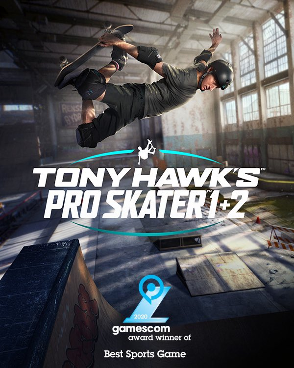

Junior Software Engineer at Vicarious Visions October 2018 - present
Tony Hawk's Pro Skater 1+2 (2020) Acted as a member of the UI/UX for the entire development cycle of the project. Worked in C++ and UE4's Slate and Blueprint systems to create the foundation for the notification system, dialog system, loading screens, credits, button legends, subtitles, and other miscellaneous features. In addition to feature writing, I collaborated with an awesome, dedicated team of artists, designers, and fellow engineers.
